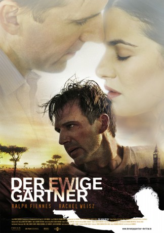
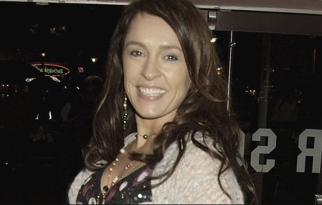
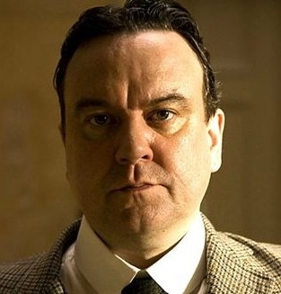

#6106 Der Ewige Gärtner
Alternativ: The Constant Gardener
Auszeichnungen: 1 Oscars gewonnen für 3 Oscars nominiert 1 GoldenGlobes gewonnen 1 BAFTA-Awards gewonnen
 
 IMDB-Wertung: 7.5 / 10
IMDB-Wertung: 7.5 / 10  Metascore: 0
Metascore: 0 
Diplomat Justin Quayle verabschiedet sich von seiner Frau Tessa. Wenig später muss Justin ihre schrecklich zugerichtete Leiche identifizieren. Er erinnert sich an die Anfänge ihrer Beziehung und das Engagement Teresas, den Praktiken eines rücksichtslosen Pharmakonzerns auf die Spur zu kommen.\r Weil Justin nach ihrem Tod auf Ungereimtheiten stößt, wird auch er zum Detektiv und kann im Verlauf der Ereignisse ungeahnte Machenschaften aufdecken und ihm bislang verborgen gebliebene Aspekte von Tess' Lebenswerk entdecken.
Jahr: 2005
Dauer: 128 Minuten
FSK: 12
Land: England Studio: Kinowelt FilmverleihTonspuren:
Untertitel: Deutsch,
Auflösung: 1080p (1920x1080) Größe: 15052 MB
Genre: Thriller, Drama, Liebe, Mystery
Regisseur: Fernando Meirelles
Drehbuch: Mike Myers
Soundtrack:
Darsteller:
 Ralph Fiennes als Justin Quayle
Ralph Fiennes als Justin Quayle Rachel Weisz als Tessa Quayle
Rachel Weisz als Tessa Quayle Danny Huston als Sandy Woodrow
Danny Huston als Sandy Woodrow- Bill Nighy als Sir Bernard Pellegrin
 Donald Sumpter als Tim Donohue
Donald Sumpter als Tim Donohue Archie Panjabi als Ghita Pearson
Archie Panjabi als Ghita Pearson Gerard McSorley als Sir Kenneth Curtiss
Gerard McSorley als Sir Kenneth Curtiss-  Juliet Aubrey als Gloria Woodrow
 Pete Postlethwaite als Lorbeer
Pete Postlethwaite als Lorbeer- Anneke Kim Sarnau als Birgit
- John Keogh als Immigration Official
- Jeffrey Caine als Club Servant
-  Richard McCabe als Arthur Hammond
- Rupert Simonian als Guido Hammond
 Teresa Harder als Birgit's Secretary
Teresa Harder als Birgit's Secretary- Hubert Koundé als Dr. Arnold Bluhm
- Daniele Harford als Miriam
- Packson Ngugi als Officer in Morgue
- Damaris Itenyo Agweyu als Jomo's Wife
- Bernard Otieno Oduor als Jomo
- Keith Pearson als Porter Coleridge
- John Sibi-Okumu als Dr. Joshua Ngaba
- Nick Reding als Crick
- Jacqueline Maribe als Wanza Kiluhu
- Donald Apiyo als Kioko
- Samuel Otage als Mustafa
- Mumbi Kaigwa als Grace Makanga
- John Moller als Athletic Unshaven Man
- Andre Leenheer als Shaven Headed Man
- Lydia M. Manyasi als Kenyan Newsreader
- Steenie Njoroge als 1st Journalist
- Stuart Wheeler als 2nd Journalist
- Chris Payne als Mike Mildren
- Nyajima Jial als Esmerelda
- Brigid M. Kakenyi als Hospital Administrator
- Katherine Damaris als Nurse
- Christopher Okinda als Doctor
- Ainea Ojiambo als Police Driver
- Peter King Nzioki als Policeman 1
- Ng'ang'a Kirumburu als Policeman 2
- Ben Parker als Det. Inspector Deasey
- Thomas Chemnitz als Uniformed Policeman
- Joe Christopher Rhode als Karl
- Edgar Nicholas Rhode als Karl
- Eva Plackner als Crossing Guard
- Claire Simpson als Maude Donohue
- Sidede Onyulo als Jonah Andika
- Chris Lightburn-Jones als Aid Worker
- Ann Achan als Aduk
- Dang Wuor Diew als Sudanese Man
Datei: X:\2005(A-F)\Ewige Gärtner, Der (2005, FSK12, 1920x1080).mkv seit 01.05.2017
Festplatte: HD 2003-2004-2005(A-F)
 Es gibt insgesamt 49 Filme in der Gruppe '2005(A-F)'
Es gibt insgesamt 49 Filme in der Gruppe '2005(A-F)'